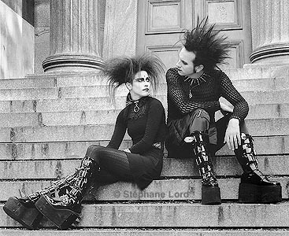

Desde os anos 50' existem culturas e subculturas alternativos que envolvem música, política, estilos de vida, estética, entre outrous.
A subcultura gótica surgiu no Reino Unido no início da década de 1980.
Além das campanhas principais, Bagi também fez participações nos dois spin-offs de Ordem Paranormal, são eles:
Gabi Cattuzzo é natural de Caxias do Sul, Rio Grande do Sul, e hoje mora em São Paulo.
Ela nasceu dia 12 de março de 1997, ou seja, tem 27 anos.
Ela tem uma pele clara, sendo descendente de italianos e se auto-descrevendo como uma pessoa branca. Ela possui 1,81 metros de altura.
Atualmente, Gabi está estudando a língua italiana, já que precisará dela para conseguir a cidadania italiana por conta sua descendência
Junto de seus fãs, Gabi tem a piada interna de ser "irmã gêmea" do Cellbit, uma referência a eles serem gêmeos no RP de QSMP (Quackity's Survival Multiplayer) e por terem uma aparência semelhante.